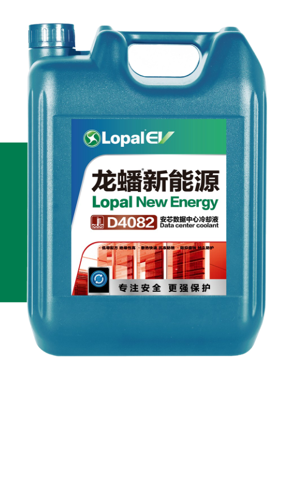

Охлаждающая пластина · Этиленгликоль
Lopal New Energy D4082
Низкопроводный теплоноситель на основе этиленгликоля для ЦОД и зарядных станций
- Низкая электропроводность: значительно снижает риск короткого замыкания при утечке и обеспечивает электробезопасность.
- Защита от отложений: поддерживает высокую теплопередачу и стабильный отвод тепла в течение длительного времени.
- Отличные низкотемпературные свойства: гарантируют стабильную работу в холодных климатических зонах.
- Высокая антикоррозийная стойкость: комплексная защита металлов (медь, латунь, алюминий) и уплотнений из EPDM-каучука.